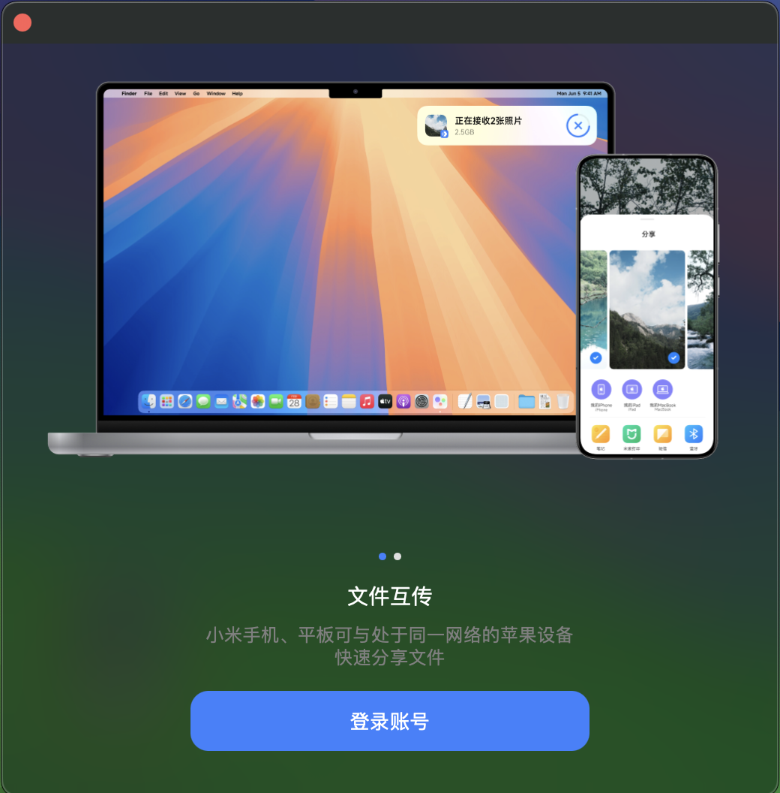
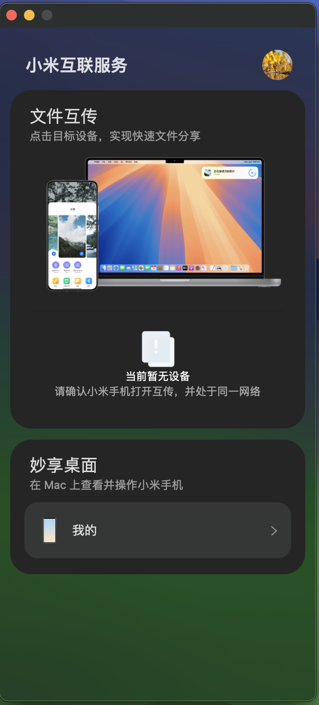

澎湃 OS2 与 Mac 互联
文章目录
前言
小米发布会上手机与 Mac 互联功能我非常期待，上周末升级到了 2.0 体验了一下与手机互联，效果还挺不错的。
废话不多说，先上图看效果。

澎湃OS 2.0
首先你需要把手机系统升级到澎湃2.0，然后才能使用互联功能。
目前只有小米15系列和14系列可以升级，其它机型要等一段时间。
Mac
只支持 M 系列的芯片，x86 就无缘了。
接着下载 Mac 上的 小米互联服务，然后安装好。
安装好后，确保手机和电脑在同一个网络下，并且 Mac要开定位的权限，并给小米互联服务授权才可使用。
接着登录同一个账号，我是直接扫码登录的。（在设置里，找到你账号，点进去，右上角有一个扫码的按钮）。 
登录后就能看到你的设备了。 
总结
小米互联还是挺好用的，Mac 和手机传文件，直接拖到小米互联就可以了。
然后手机要分享图片，可以直接发送。在发送列表里可以看到你的 Mac。
小米这一步可谓是非常高明，通常我要做这些操作，还要用 ADB 或者 Android Studio 来操作，现在简单了。